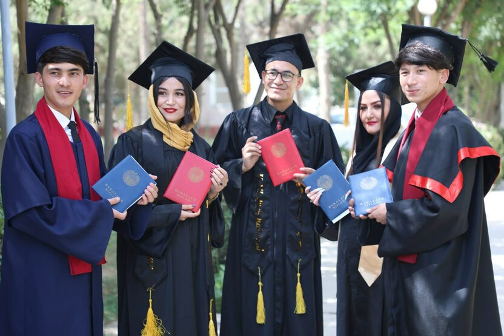

"OTM bitiruvchilarini ishga olgan tadbirkorlarga 5 mlrd so'mgacha imtiyozli kredit beriladi"
Tadbirkorlarga imtyozli kredit ajratishda har bir mlrd so'mgacha bo'lgan mablag' uchun kamida 1 nafar bitiruvchini ishga olish sharti qo'yiladi.
3-noyabrdagi 328-sonli Prezident qarori bilan «Oliy ta’lim tashkilotlari bitiruvchilarining ishga joylashishiga ko‘maklashish bo‘yicha qo‘shimcha chora-tadbirlar to‘g‘risida»gi qarorga o‘zgartirish va qo‘shimchalar kiritildi. Bu haqda Adliya vazirligining «Huquqiy axborot» Telegram kanalida ma’lum qilindi. Kiritilgan qo‘shimchalarga ko‘ra, oliy ta’lim tashkilotlari bitiruvchilarini ish bilan ta’minlagan tadbirkorlarga 2 yillik imtiyozli davr bilan 7 yil muddatga 5 mlrd so‘mgacha yillik Markaziy bank asosiy stavkasidan 4 foizlik punkt yuqori stavkada kreditlar ajratish belgilandi. Bunda imtiyozli kredit tadbirkorlarga har bir mlrd so‘m qiymatgacha bo‘lgan mablag‘ uchun kamida 1 nafar bitiruvchini ishga qabul qilish sharti bilan ajratiladi.
Kredit ishlab chiqarish va xizmat ko‘rsatish sohasidagi loyihalarga asosiy vositalar sotib olish hamda aylanma mablag‘larni to‘ldirish uchun ajratiladi. Tadbirkor uning imtiyozli kredit olishiga sabab bo‘lgan bitiruvchi o‘rtasida 2 yil davomida mehnat shartnomasi bekor bo‘lgan taqdirda, kredit foizi mehnat shartnomasi bekor bo‘lgan sanadan tijorat stavkasiga o‘zgartiriladi. Biroq, bundan ushbu xodim o‘rniga 1 oy muddatda boshqa bitiruvchi ishga qabul qilingan hollar mustasno. Shuningdek, bitiruvchilar o‘rtasida eng yaxshi startap va innovatsion loyihalar tanlovi tashkil etiladi. Tanlov g‘oliblariga kamida 2 nafar bitiruvchini ishga olish majburiyati bilan 1 mlrd so‘mgacha grant ajratiladi.


Eslatib o‘tamiz, avvalroq harbiy OTM bitiruvchilari ofitser lavozimlarida 5 yil davomida xizmat o‘tamasa, o‘qitish mablag‘lari undirib olinishi haqida xabar berilgandi.
Ushbu qaror va undagi imtiyozlar haqida batafsilroq ma’lumot beraman. Mazkur hujjat mohiyatan oliy ta’limni tamomlagan yoshlarni tezroq mehnat bozoriga moslashtirish va tadbirkorlarni ularni ishga olishga rag‘batlantirishni ko‘zda tutadi. Asosiy jihatlardan biri shundaki, kreditlar faqatgina maosh to‘lash uchun emas, balki biznesni kengaytirish, ya’ni yangi uskunalar sotib olish yoki xomashyo zaxirasini to‘ldirish kabi real o‘sishga xizmat qiladigan maqsadlar uchun beriladi. Bu esa tadbirkorga ham moliyaviy yengillik, ham yangi mutaxassis kadr olib keladi. Kredit stavkasi Markaziy bank asosiy stavkasiga (hozirda 13%) 4 foiz qo‘shilgan holda hisoblanadi, bu esa bozor stavkalaridan ancha arzonroqdir.
Shuningdek, grant masalasi ham juda muhim. Startap loyihalar uchun beriladigan 1 mlrd so‘mgacha bo‘lgan grantlar qaytarib olinmaydigan mablag‘ hisoblanadi, faqat uning sharti — bitiruvchilarni ish bilan ta’minlash va innovatsiyani joriy qilishdir. Agar tadbirkor va bitiruvchi o‘rtasidagi shartnoma 2 yil ichida buzilsa-yu, tadbirkor o‘sha bo‘sh qolgan o‘ringa boshqa bitiruvchini topib kelmasa, davlat tomonidan berilgan imtiyozli foizlar bekor qilinib, oddiy bank stavkasiga o‘tib ketadi. Bu mexanizm bitiruvchining ish joyida uzoqroq qolishini kafolatlash uchun o‘ylab topilgan. Umuman olganda, bu tizim o‘qishni bitirgan, lekin tajribasi yo‘qligi sababli ish topishga qiynalayotgan yoshlar uchun "ko‘prik" vazifasini o‘taydi.